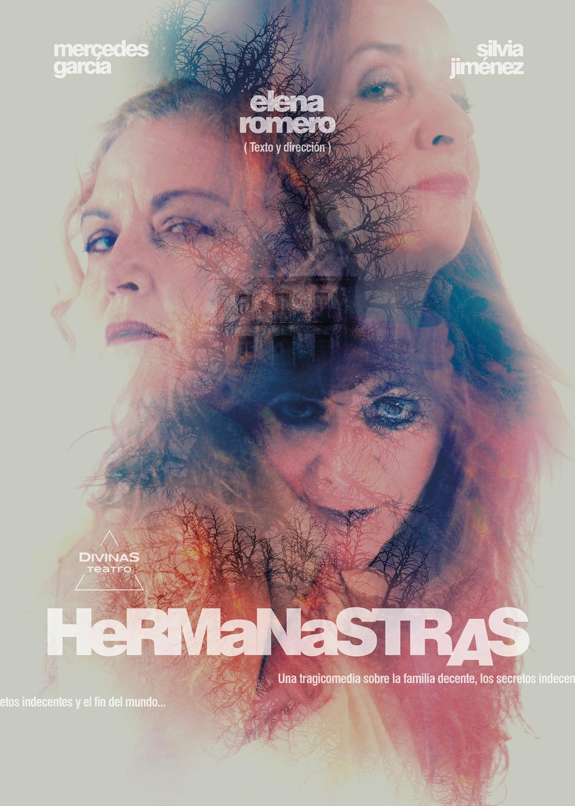
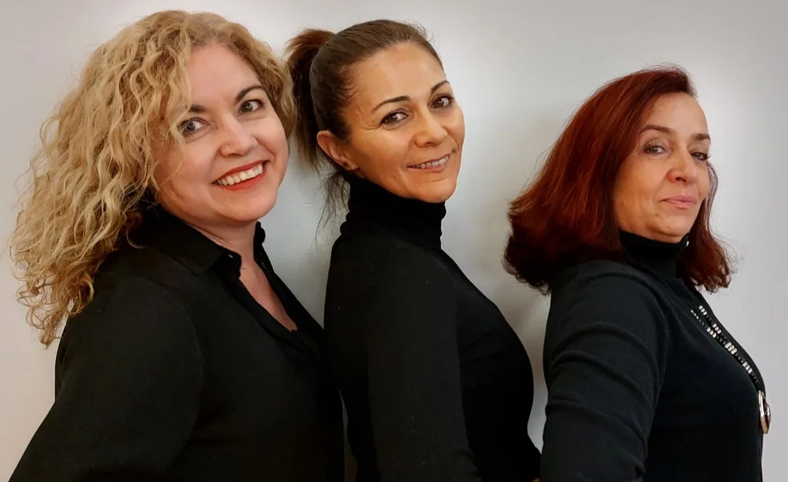
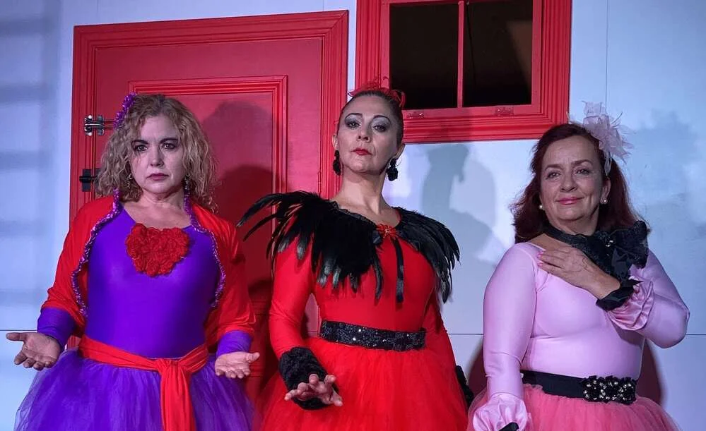

OBRA / 01
TRES AMIGAS · UNA ESCAPADA
Escapadas
Tres amigas de toda la vida dejan atrás sus quehaceres cotidianos para pasar unos días juntas en la playa y celebrar un divorcio.
Descubre la obraTEATRO CON RAÍCES EN SALAMANCA
Somos Divinas Teatro: tres actrices con trayectoria en Salamanca y Madrid, unidas para crear historias con sello propio y mirar lo femenino desde distintos prismas.
NOS VEMOS EN EL TEATRO
El jueves 8 de octubre a las 20:30 h actuamos con Escapadas en el Auditorio Municipal de Villanueva de la Vera, Cáceres.
PRÓXIMAMENTE · NUEVO ESTRENO
Una nueva obra de Divinas Teatro está en camino. Pronto compartiremos más información sobre Hermanastras.
Contacta con la compañía
LA COMPAÑÍA
Divinas de la Muerte nace de las ganas de contar historias a nuestra manera.
Después de décadas en distintos grupos de teatro de Salamanca y Madrid, Elena Romero, Mercedes García y Silvia Jiménez decidieron crear una plataforma propia en 2021.
Desde entonces exploramos lo femenino desde múltiples prismas. A Escapadas y No te fíes se sumará próximamente Hermanastras.
¿Hablamos de teatro?
EN ESCENA
Descubre nuestras obras de teatro y lo que estamos preparando para el próximo estreno.
TRES AMIGAS · UNA ESCAPADA
Tres amigas de toda la vida dejan atrás sus quehaceres cotidianos para pasar unos días juntas en la playa y celebrar un divorcio.
Descubre la obra
OBRA / 02UNA NOCHE · MUCHAS PREGUNTAS
Esta noche el pánico se cuela por la cerradura. ¿Abrir la puerta o seguir disimulando? Una historia sobre lo que mostramos y lo que ocultamos.
Descubre la obraNUESTRO PUNTO DE PARTIDA
La trayectoria de nuestras actrices pasa por escenarios y grupos de teatro de Salamanca y Madrid. Esta compañía nace de ese recorrido y del deseo de seguir creando propuestas propias.
Contacta con la compañíaPREGUNTAS FRECUENTES
Un poco más sobre la compañía y las historias que llevamos a escena.
Elena Romero, Mercedes García y Silvia Jiménez: tres actrices con trayectoria en grupos teatrales de Salamanca y Madrid.
Conoce Escapadas y No te fíes en sus páginas. Además, preparamos el estreno de Hermanastras; compartiremos los detalles cuando estén disponibles.
Sí. Salamanca forma parte de la trayectoria de nuestras actrices. La compañía también recoge experiencias teatrales en Madrid.
Escríbenos a través del formulario o por correo electrónico. Te responderemos directamente para hablar de tu propuesta.
SIGUIENTE ACTO
Si quieres hablar de nuestras obras, una actuación o una colaboración, estamos al otro lado.
divinasdelamuerte7@gmail.com